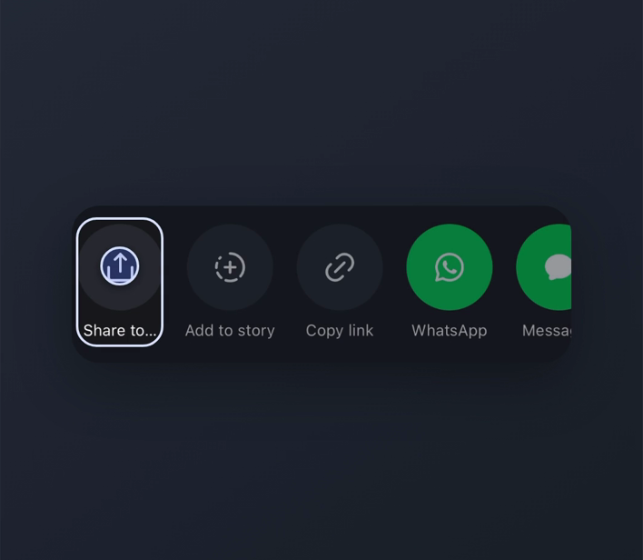
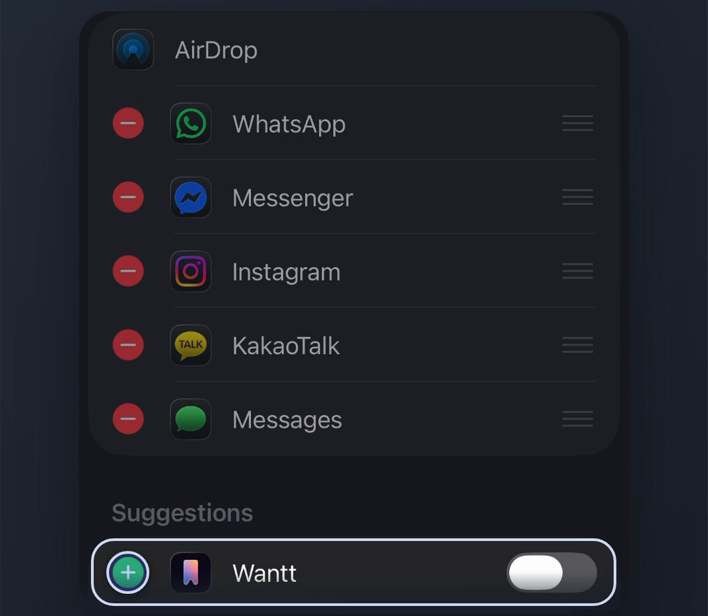
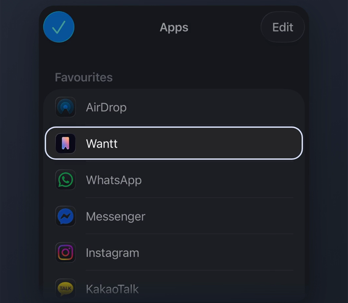

01
Share from Instagram.
Open a public Instagram post or Reel you want to remember. Tap the share arrow, then Share to… to open the iPhone Share Sheet.

First-time setup
Wantt may not appear in the first row of apps straight away. Set it up once and it’ll be much easier to reach whenever you find something worth saving on Instagram.
Open a public Instagram post or Reel you want to remember. Tap the share arrow, then Share to… to open the iPhone Share Sheet.

Look for Wantt in the app row. If it is already there, no setup is needed. Otherwise swipe to More, then Edit. Enable Wantt if it is off, and use + to add it to Favourites when offered. Tap the checkmark or Done.

Optional: in Edit, hold the reorder handle beside Wantt and move it nearer the top of Favourites. Tap the checkmark or Done. You can save without reordering.

You’re set
Next time you share something from Instagram, Wantt should be much easier to reach.
Ready to save something?